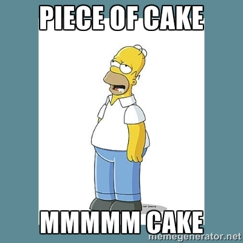

Intro to Git (Part 1)
git - the stupid content tracker
Well… the man pages are certainly stupid.
GIT-REBASE(1)
NAME
git-rebase - Forward-port local commits to the updated upstream head
SYNOPSIS
git rebase [-i | --interactive] [options] [--exec <cmd>]
[<upstream> [<branch>]]
git rebase [-i | --interactive] [options] [--exec <cmd>]
--root [<branch>]
git rebase --continue | --skip | --abort | --edit-todoSeriously, just look up your questions on stack overflow. You’ll get better explanations/examples.
I mean c’mon. I’ve haven’t been this confused by a manpage since I tried to read sudoers(5).
Aside from the built in documentation, git is pretty awesome. It’s saved my butt on more than one occasion and is a regular part of my workflow. Besides, it’s an industrial standard at this point, so it’s worth knowing.
Why you should be using git
Git is a version control system. It saves snapshots of your code in a “repository” and allows you to organize and view this history so you can:
- back up code
- view old code
- recover old code
- find where bugs first appeared
- easily collaborate with others
- figure out who to blame when things break (I’m not kidding: see
git blame) - work on new features without accidentally breaking important code
- control where code goes (seems vague now, but you’ll learn more about this in part 2)
Sounds pretty great, huh? There are a few commands/concepts to learn, but it’s not terribly difficult, and you can pick up the basics in a few minutes.
Install it
brew it, apt-get it, pacman -S it – use whatever package manager you have to install. If you’re on Windows :’( TM you can download a git shell.
On GUIs
There are many GUIs available for git. They can be useful sometimes when visualizing a repo’s history (although I personally like git log --graph in every case). However, I DO NOT recommend using one when you’re learning git. Knowing the commands will allow you to get out of sticky situations, and CLIs will almost always beat GUIs in efficiency, ease of automation, and speed, even though they require a bit of learning.
But first, some pictures
Git history is stored in a series of commits (a commit is a snapshot of the code).
git_1
Commits are stored in branches.
git_2
The main branch is called master:
git_3
Not bad so far.

Your code is in many places
If git is anything, it’s redundant. You, your fellow developer, your grandmother and your dog all have their own copy of the entire codebase.
repo
Whenever you modify the git history or add a new commit, you are operating on your local repository.
When you are working with others, you’ll often have a central repo called a “remote”. You push and pull code to and from a remote.
REMEMBER! No one can see your local commits until you push them to the remote
You don’t necessarily have to push to/pull from the remote though. If you want, you can push to your dog’s repo, then pull code from Grandma’s repo (if you have the IPs/permissions).
The code is therefore distributed amongst everybody who is working on it. If the main remote goes down, everyone simply can push to a new remote repo and everything is as it was before.
Let’s learn some commands!
GIT SETUP 101
git init # 1.
git remote add origin https://github.com/username/new_repo # 2.- You’re project is now gitified! Congrats!
- Add a remote, and name it
origin. This is the conventional name for the main remote. You have to have a remote before doing this, so go sign up for GitHub and create a new repo.
COMMIT YO CODE
This is all you need to do to create a commit containing all changes you’ve made since the last commit, then push it (you’ll be pushing your changes to your new GitHub remote):
git add --all # (1.)
git commit -m "a wild commit message appears!" # (2.)
git push origin master # (3.)- You first “stage” the code changes for a commit. This just marks which files you’re going to commit (
--allmeans stage every changed file). - Commit it (this is to the local repo). If you don’t specify a message with
-m, it’ll pop open an editor so you can add a description of the commit. - Push the
masterbranch toorigin(type in your GitHub user and password when the prompts appear). - Do a little dance.
Run the above commands anytime you want to add a new commit.
PULL NEW CODE YO
git pull origin master #(1.)- Pull the code from the master branch of the remote (type in your GitHub user and password when the prompts appear).
- Do another little dance.

What you now know
Give yourself a pat on the back. You now have a basic understanding of git, and can:
- create a repo (
git init) - add a remote (
git remote add) - stage files (
git add) - commit staged files (
git commit) - push commits to a remote (
git push) - pull new commits from a remote (
git pull)
That’s all for the first part. In the next part, you’ll learn more about branches and remotes, and how “git flow” works.
Let me know what you think on twitter